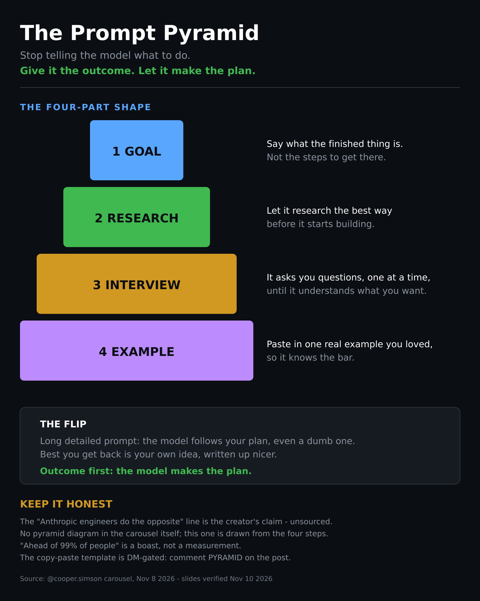
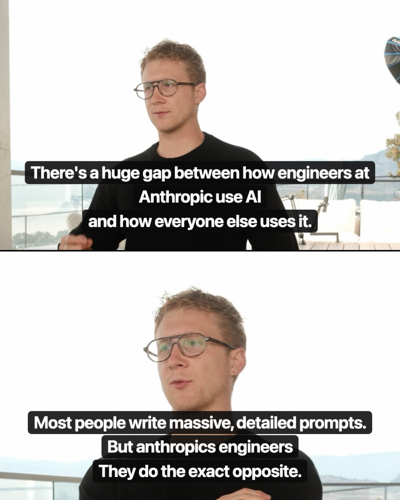
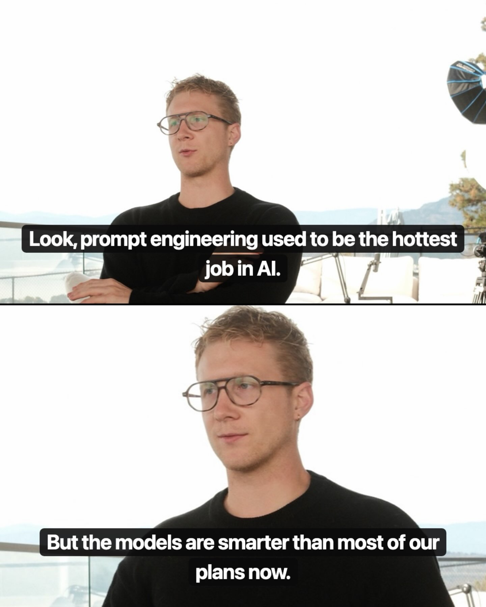
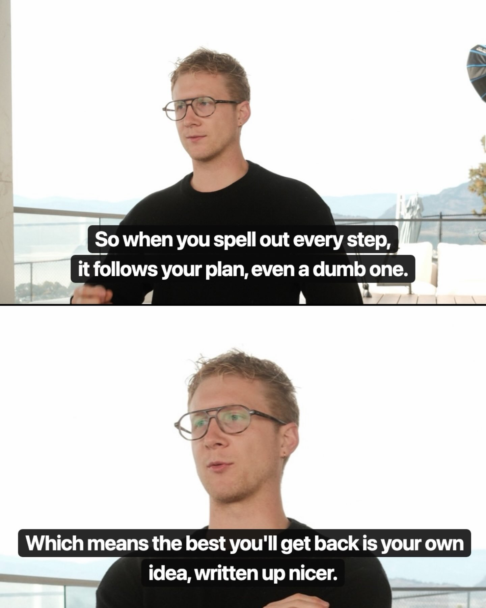
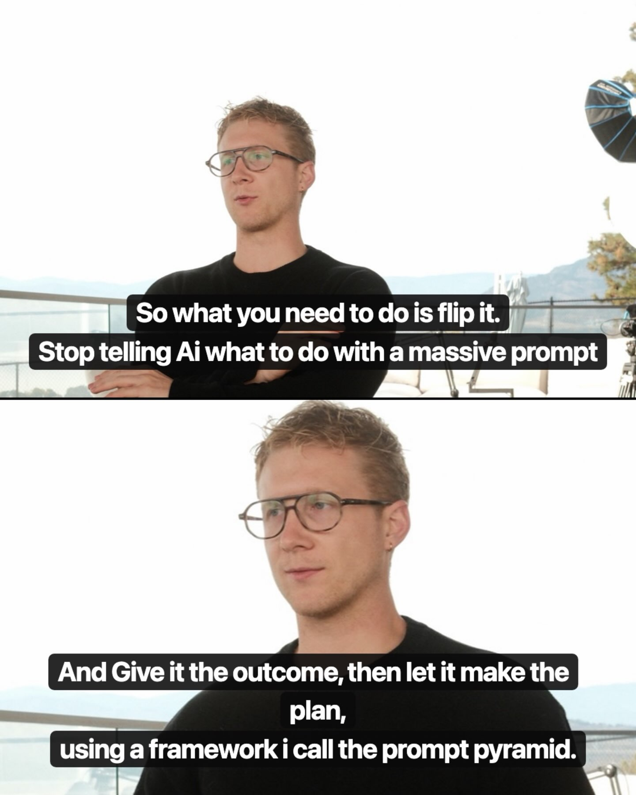
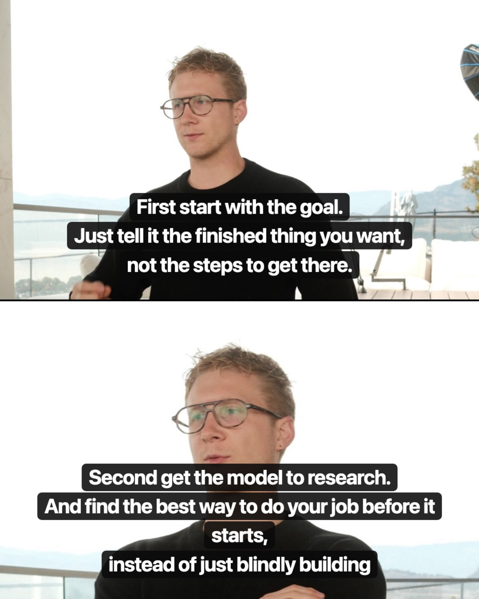
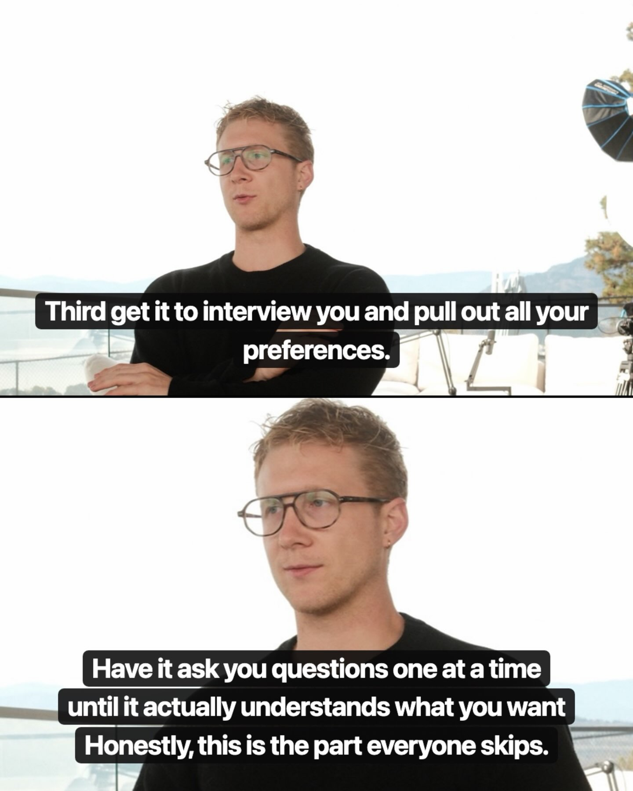
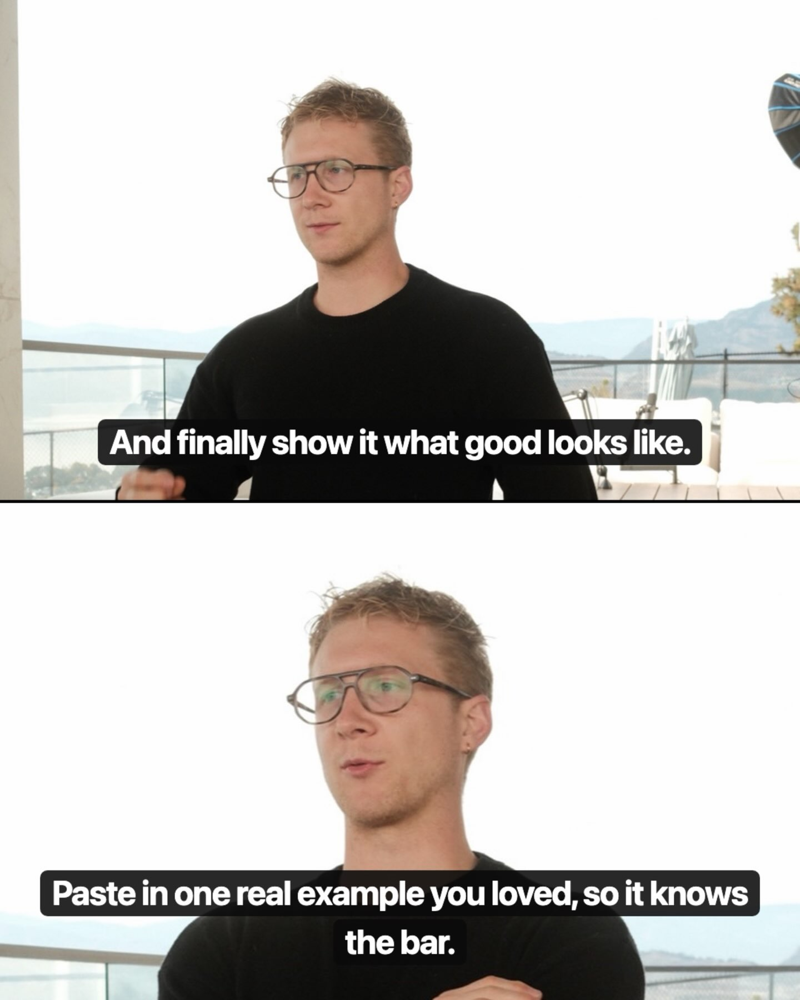
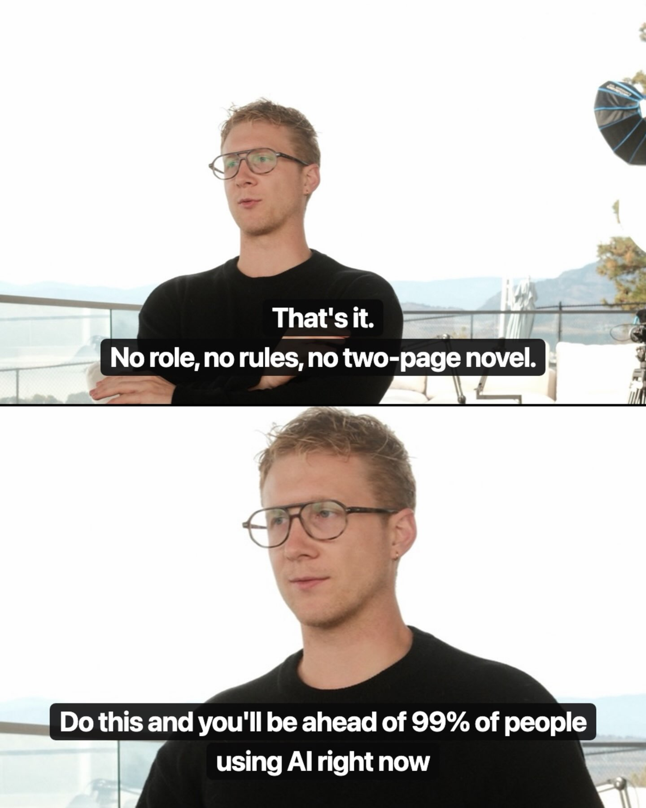
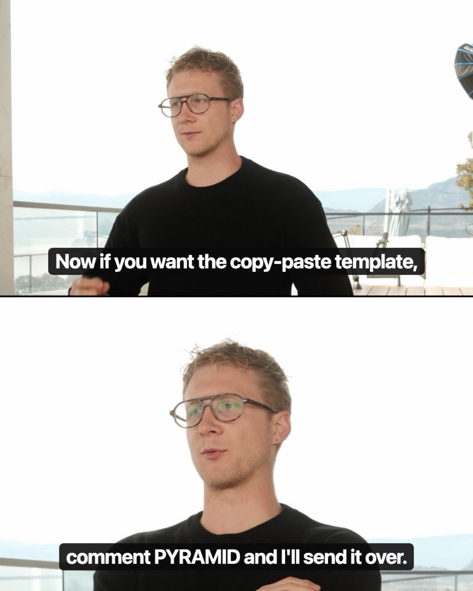

Categories

05 — Prompts & Evals
Thesis: A single reel, but it carries a discipline the whole collection depends on: prompts are not set-and-forget text — they're experimental surfaces with measurable ROI per rule. Everything else in this repo (skills, memory, routing) only compounds if someone is testing what actually improves output and deleting what doesn't.
The Prompt Pyramid: stop telling the model what to do, give it the outcome
- Creator: @cooper.simson · Date: 2026-11-08
- What it suggests: Prompt engineering as a discipline is mostly wasted effort now, because the models got smarter than most of our plans. Spell out every step in a long detailed prompt and the model follows your plan — even a dumb one — so the best you get back is your own idea, written up nicer. The flip: give the model the outcome and let it make the plan. The four-part shape, in plain language: (1) Goal — say what the finished thing is, not the steps to get there; (2) Research — have the model find the best way to do your job before it starts building, instead of blindly building; (3) Interview — let it ask you questions one at a time until it actually understands what you want, pulling out your preferences (the part everyone skips); (4) Example — paste in one real example you loved, so it knows the bar. That's it: no role, no rules, no two-page novel. Two honest notes: the "Anthropic engineers do the exact opposite" line is the creator's claim, unsourced, and "ahead of 99% of people" is a boast, not a measurement. The copy-paste template is DM-gated behind commenting PYRAMID — it isn't in the slides. The carousel itself has no drawn pyramid (talking-head stills only), so the diagram below is drawn from the four steps.
- Repos/tools: None (methodology)
- Extractable skill: Outcome-first prompting — goal, research, interview, example as a fixed four-part prompt shape; the Interview step is the same move as the Nov 5 "interview the model about the job" step in 01 — let the model pull the spec out of you instead of you writing it upfront.
- Source: https://www.instagram.com/p/DfftX9kkgsL/









How to run experiments on prompts when output quality is critical
- Creator: @camillaintech · Date: 2026-07-24
- What it suggests: After 50 hours building an AI model workflow, the hard-won method for prompt iteration: decompose output quality into three pillars — the foundational LLM, the customization layer (knowledge base, user info), and the quality gates/rules governing output — then test changes to each pillar systematically and measure aggregate improvement. The counterintuitive finding that drives the whole method: adding more rules to force quality actually degrades it. Each rule is another check the model must run before generating, which slows responses and — worse — forces the model to prioritize across a long list, producing worse output. Unless a rule is deterministic and explicit, the model infers its meaning slightly differently each time, so you can't eyeball single outputs; you need repeated runs and aggregate measurement to know whether a rule earns its keep. The promised Part 2 (the actual system) isn't in this reel, but Part 1's frame is the valuable part: treat every prompt addition as a hypothesis with a measured payoff, and assume rules have costs until proven otherwise.
- Repos/tools: None (methodology)
- Extractable skill: Rule-ROI testing — for each prompt rule, run repeated trials, measure aggregate quality and latency, keep only rules that prove their worth; default to fewer, deterministic rules.
- Source: https://www.instagram.com/reel/DbL2Wd3tK_4/
ASD-STE100: prompt LLMs in aerospace controlled English for clearer explanations
- Creator: @vyzual.ai (surfacing Andrej Karpathy's recommendation) · Date: 2026-10-05
- What it suggests: Karpathy's tip: ask the LLM to "explain [topic] using an ASD-STE100 style." ASD-STE100 (Simplified Technical English) is a real controlled-language standard developed for aerospace maintenance documentation — restricted ~900-word vocabulary, short sentences, active voice, one idea per sentence. The mechanism: heavy constraints on diction and syntax force the model into plain, structured output, which reads far more clearly than default LLM prose. The carousel's worked example (explaining "endogeneity"): the normal output is dense academic prose; the STE100 version says the same thing in simple words and short sentences. Karpathy notes he sometimes softens it ("part of the way to ASD-STE100") when the full spec feels too stringent. The generalizable principle: output constraints beat output instructions — telling the model how to write (vocabulary, sentence length, voice) constrains the output space more reliably than asking it to "be clear."
- Repos/tools: ASD-STE100 spec (Aerospace and Defence Industries Association of Europe).
- Extractable skill: Constraint-style prompting — append "using ASD-STE100 style: simple words, short sentences, active voice, one idea per sentence" to explanation prompts; prefer structural constraints over vague quality adjectives.
- Source: screenshot of Karpathy's post via @vyzual.ai carousel (user-supplied, Oct 5 2026); spec: ASD Simplified Technical English.